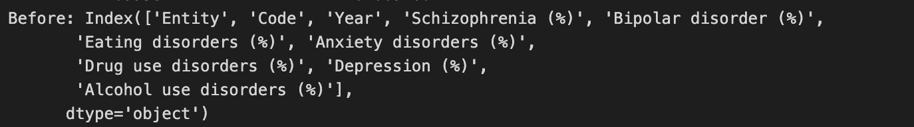

Code
#https://pdas.samhsa.gov/saes/substate#
import pandas as pd
import numpy as np
import matplotlib.pyplot as plt
import glob
from sklearn.feature_extraction.text import CountVectorizer#https://pdas.samhsa.gov/saes/substate#
import pandas as pd
import numpy as np
import matplotlib.pyplot as plt
import glob
from sklearn.feature_extraction.text import CountVectorizer#load data from csv file
all_data_frames=glob.glob("./Data_uncleaned/*.csv")+glob.glob("./Data_uncleaned/*.xlsx")
print(all_data_frames)
for fname_index, fname in enumerate(all_data_frames):
print(fname_index, fname)
df_GDP = pd.read_csv("./Data_uncleaned/GDP.csv")
df_income_group = pd.read_excel("./Data_uncleaned/Income_group.xlsx")
df_Countries_Continents = pd.read_csv("./Data_uncleaned/Countries_Continents.csv")
df_education = pd.read_csv("./Data_uncleaned/education.csv")
df_discomfort_speaking_anxiety_depression_2020 = pd.read_csv("./Data_uncleaned/discomfort_speaking_anxiety_depression_2020.csv")
df_eating_disorder = pd.read_csv("./Data_uncleaned/eating_disorders_prevalence_males_vs_females.csv")
df_first_anxiety_or_depression = pd.read_csv("./Data_uncleaned/age_when_first_had_anxiety_depression.csv")
df_mental_health= pd.read_excel("./Data_uncleaned/mental_health.xlsx")
df_gdp_per_captita=pd.read_csv('./Data_uncleaned/GDP_per_captita.csv')
df_all_mental_health_symtoms = pd.read_csv("./Data_uncleaned/all_mental_health_symptoms.csv")
df_symtoms= pd.read_csv("./Data_uncleaned/symptoms.csv")['./Data_uncleaned/education.csv', './Data_uncleaned/Countries_Continents.csv', './Data_uncleaned/symptoms.csv', './Data_uncleaned/age_when_first_had_anxiety_depression.csv', './Data_uncleaned/all_mental_health_symptoms.csv', './Data_uncleaned/GDP_per_captita.csv', './Data_uncleaned/discomfort_speaking_anxiety_depression_2020.csv', './Data_uncleaned/eating_disorders_prevalence_males_vs_females.csv', './Data_uncleaned/GDP.csv', './Data_uncleaned/Income_group.xlsx', './Data_uncleaned/mental_health.xlsx']
0 ./Data_uncleaned/education.csv
1 ./Data_uncleaned/Countries_Continents.csv
2 ./Data_uncleaned/symptoms.csv
3 ./Data_uncleaned/age_when_first_had_anxiety_depression.csv
4 ./Data_uncleaned/all_mental_health_symptoms.csv
5 ./Data_uncleaned/GDP_per_captita.csv
6 ./Data_uncleaned/discomfort_speaking_anxiety_depression_2020.csv
7 ./Data_uncleaned/eating_disorders_prevalence_males_vs_females.csv
8 ./Data_uncleaned/GDP.csv
9 ./Data_uncleaned/Income_group.xlsx
10 ./Data_uncleaned/mental_health.xlsx#A.clean the data named eating_disorders
# show all the columns of the dataframe
print('Before : ',df_eating_disorder.head())
# print(df_eating_disorder.head())
# drop the columns Continent and Population because they are meaningless to the analysis
df_eating_disorder = df_eating_disorder.drop(columns=['Continent','Population'])
# print(df_eating_disorder.shape)
# only keep the rows of the dataframe when the column 'Year' is between 1990-2021
# eating_disorder_df = eating_disorder_df.loc[eating_disorder_df['Year'] == range(1990,2022)]
df_eating_disorder = df_eating_disorder[df_eating_disorder['Year'].isin(range(1990,2022))]
rename_map={
'Entity':'Economy',
'Year':'Year',
}
df_eating_disorder.rename(columns=rename_map, inplace=True)
#drop the rows when the column named Eating_disorders_Male is null in the dataframe df_eating_disorder
df_eating_disorder= df_eating_disorder.dropna(subset=['Eating_disorders_Male'])
#caculate the mean of the column Male and Female of the dataframe and save it to a new column named All_gender
df_eating_disorder['All_gender'] = df_eating_disorder[['Eating_disorders_Male', 'Eating_disorders_Female']].mean(axis=1)
print('After: ',df_eating_disorder.head())
#save the dataframe to csv file
df_eating_disorder.to_csv("./Data_cleaned/eating_disorder_male_female.csv", index=False)Before : Entity Code Year Eating_disorders_Male \
0 Abkhazia OWID_ABK 2015 NaN
1 Afghanistan AFG 1990 0.088487
2 Afghanistan AFG 1991 0.086048
3 Afghanistan AFG 1992 0.083625
4 Afghanistan AFG 1993 0.081628
Eating_disorders_Female Population Continent
0 NaN NaN Asia
1 0.161867 10694804.0 NaN
2 0.156910 10745168.0 NaN
3 0.152412 12057436.0 NaN
4 0.147938 14003764.0 NaN
Entity Code Year Eating_disorders_Male \
0 Abkhazia OWID_ABK 2015 NaN
1 Afghanistan AFG 1990 0.088487
2 Afghanistan AFG 1991 0.086048
3 Afghanistan AFG 1992 0.083625
4 Afghanistan AFG 1993 0.081628
Eating_disorders_Female Population Continent
0 NaN NaN Asia
1 0.161867 10694804.0 NaN
2 0.156910 10745168.0 NaN
3 0.152412 12057436.0 NaN
4 0.147938 14003764.0 NaN
After: Economy Code Year Eating_disorders_Male Eating_disorders_Female \
1 Afghanistan AFG 1990 0.088487 0.161867
2 Afghanistan AFG 1991 0.086048 0.156910
3 Afghanistan AFG 1992 0.083625 0.152412
4 Afghanistan AFG 1993 0.081628 0.147938
5 Afghanistan AFG 1994 0.079439 0.143980
All_gender
1 0.125177
2 0.121479
3 0.118018
4 0.114783
5 0.111710 #B.clean the data named discomfort_speaking_anxiety_depression_2020
print('Before : ',df_discomfort_speaking_anxiety_depression_2020.head())
#rename the column 'Entity' to 'Country' and 'Share - Question: mh5 - Someone local comfortable speaking about anxiety/depression with someone they know - Answer: Not at all comfortable - Gender: all - Age_group: all' to 'Not_Comfortable'
df_discomfort_speaking_anxiety_depression_2020.rename(columns={'Entity':'Economy'}, inplace=True)
print('After ', df_discomfort_speaking_anxiety_depression_2020.head())
df_discomfort_speaking_anxiety_depression_2020.to_csv("./Data_Cleaned/discomfort_speaking_anxiety_depression_2020.csv", index=False)Before : Economy Code Year \
0 Albania ALB 2020
1 Algeria DZA 2020
2 Argentina ARG 2020
3 Asia NaN 2020
4 Australia AUS 2020
not_at_all_comfortable_speaking_anxiety_or_depression_percent
0 27.573915
1 11.403895
2 26.333920
3 26.522500
4 30.768505
After Economy Code Year \
0 Albania ALB 2020
1 Algeria DZA 2020
2 Argentina ARG 2020
3 Asia NaN 2020
4 Australia AUS 2020
not_at_all_comfortable_speaking_anxiety_or_depression_percent
0 27.573915
1 11.403895
2 26.333920
3 26.522500
4 30.768505 #C.clean the data named GDP
#add column names to the dataframe df_GDP
print('Before: ',df_GDP.head())
df_GDP.columns=['Code', 'Ranking','unnamed:2','Economy','GDP(2022)','unnamed:5']
df_GDP=df_GDP.drop(columns=['unnamed:2','unnamed:5'])
#check the data type of the column GDP
# print(df_GDP.dtypes)
#convert the column GDP to numeric type
df_GDP['GDP(2022)']=df_GDP['GDP(2022)'].str.replace(',','')
#convert the column GDP from object type to numeric type
df_GDP['GDP(2022)']=pd.to_numeric(df_GDP['GDP(2022)'],errors='coerce')
print('After: ',df_GDP.head())
df_GDP.to_csv("./Data_cleaned//GDP.csv", index=False)Before: USA 1 Unnamed: 2 United States 25,462,700 Unnamed: 5
0 CHN 2.0 NaN China 17,963,171 NaN
1 JPN 3.0 NaN Japan 4,231,141 NaN
2 DEU 4.0 NaN Germany 4,072,192 NaN
3 IND 5.0 NaN India 3,385,090 NaN
4 GBR 6.0 NaN United Kingdom 3,070,668 NaN
After: Code Ranking Economy GDP(2022)
0 CHN 2.0 China 17963171.0
1 JPN 3.0 Japan 4231141.0
2 DEU 4.0 Germany 4072192.0
3 IND 5.0 India 3385090.0
4 GBR 6.0 United Kingdom 3070668.0#D.clean the data named Countries_Continents
#rename the column Country to Economy
print('Before: ',df_Countries_Continents.head())
df_Countries_Continents.rename(columns={'Country':'Economy'},inplace=True)
print('After: ',df_Countries_Continents.head())
df_Countries_Continents.to_csv("./Data_cleaned/Countries_Continents.csv", index=False)Before: Continent Country
0 Africa Algeria
1 Africa Angola
2 Africa Benin
3 Africa Botswana
4 Africa Burkina
After: Continent Economy
0 Africa Algeria
1 Africa Angola
2 Africa Benin
3 Africa Botswana
4 Africa Burkina#D.clean the data named education
print('Before: ',df_education.head())
#create a new column named 'average_learning_Adjusted_of_school' to calculate the average of the columns 'Average years of schooling' of each Entity
df_education['average_learning_Adjusted_of_school'] = df_education.groupby('Entity')['Learning-Adjusted Years of School'].transform('mean')
# This method keeps the first occurrence of each entity and drops the subsequent duplicates.
df_education = df_education.drop_duplicates(subset='Entity', keep='first')
# rename the column entity to Economy
df_education.rename(columns={'Entity':'Economy'},inplace=True)
print('After: ',df_education.head())
df_education.to_csv("./data_cleaned/Education.csv", index=False)Before: Entity Code Year Learning-Adjusted Years of School
0 Afghanistan AFG 2017 4.870000
1 Afghanistan AFG 2018 4.949788
2 Afghanistan AFG 2020 5.052838
3 Africa NaN 2017 4.931378
4 Africa NaN 2018 5.123904
After: Economy Code Year Learning-Adjusted Years of School \
0 Afghanistan AFG 2017 4.870000
3 Africa NaN 2017 4.931378
6 Albania ALB 2010 7.382478
10 Algeria DZA 2010 7.202200
14 Angola AGO 2017 4.110000
average_learning_Adjusted_of_school
0 4.957542
3 5.058634
6 8.526723
10 7.045445
14 4.193318 #E.clean the data named age_when_first_anxiety_depression.csv
print('Before: ',df_first_anxiety_or_depression.head())
df_first_anxiety_or_depression=df_first_anxiety_or_depression.drop(columns=['Code'])
# print(df_first_anxiety_or_depression.columns)
#melt the dataframe
df_first_anxiety_or_depression=pd.melt(df_first_anxiety_or_depression, id_vars=['Entity'], value_vars=['Ages <13','Ages_13_19','Ages_20_29','Ages_30_39','Ages ≥40','Dont_know/Refused'], var_name='Age', value_name='Percentage')
print('After: ',df_first_anxiety_or_depression.head())
df_first_anxiety_or_depression.to_csv("./Data_cleaned/age_when_first_anxiety_or_depression.csv", index=False)
# # Sample dataframe
# df = pd.DataFrame({
# 'A': ['a1', 'a2', 'a3'],
# 'B': [1, 2, 3],
# 'C': [4, 5, 6],
# 'D': [7, 8, 9]
# })
# print("Original DataFrame:")
# print(df)
# # Use melt to transform the dataframe
# melted_df = pd.melt(df, id_vars=['A'], value_vars=['B', 'C', 'D'], var_name='Variable', value_name='Value')
# print("\nMelted DataFrame:")
# print(melted_df)Before: Entity Code Year Ages <13 Ages_13_19 Ages_20_29 \
0 Africa NaN 2020 1.271836 14.229228 22.264650
1 Asia NaN 2020 7.795371 9.628078 23.403633
2 Europe NaN 2020 9.083381 22.210781 22.034777
3 High-income countries NaN 2020 2.473921 24.484507 10.832585
4 Lower-middle-income countries NaN 2020 8.800553 8.485406 26.288944
Ages_30_39 Ages ≥40 Dont_know/Refused
0 16.803090 2.706476 42.724724
1 12.663021 9.983976 36.525925
2 7.628320 24.531280 14.511458
3 16.975899 16.115680 29.117413
4 8.428943 7.348721 40.647434
After: Entity Age Percentage
0 Africa Ages <13 1.271836
1 Asia Ages <13 7.795371
2 Europe Ages <13 9.083381
3 High-income countries Ages <13 2.473921
4 Lower-middle-income countries Ages <13 8.800553print('Before: ',df_gdp_per_captita.head())
#make a new dataframe with the column from 1990 to 2017
df_gdp_per_captita_subset=df_gdp_per_captita[['GDP per capita, current prices(U.S. dollars per capita)','1990','1991','1992','1993','1994','1995','1996','1997','1998','1999',
'2000','2001','2002','2003','2004','2005','2006','2007','2008','2009',
'2010','2011','2012','2013','2014','2015','2016','2017']]
df_gdp_per_captita_subset=df_gdp_per_captita_subset.rename(columns={'GDP per capita, current prices(U.S. dollars per capita)':'Economy'})
#melt the dataframe
df_gdp_per_captita_subset=pd.melt(df_gdp_per_captita_subset, id_vars=['Economy'], value_vars=['1990','1991','1992','1993','1994','1995','1996','1997','1998','1999',
'2000','2001','2002','2003','2004','2005','2006','2007','2008','2009',
'2010','2011','2012','2013','2014','2015','2016','2017'], var_name='Year', value_name='GDP_per_capita')
print('After: ',df_gdp_per_captita_subset.head())
# print the data type of the column GDP_per_capita
# print(df_gdp_per_captita_subset.dtypes)
#convert the column GDP_per_capita and Year from object type to numeric type
df_gdp_per_captita_subset['GDP_per_capita']=pd.to_numeric(df_gdp_per_captita_subset['GDP_per_capita'],errors='coerce')
df_gdp_per_captita_subset['Year']=pd.to_numeric(df_gdp_per_captita_subset['Year'],errors='coerce')Before: GDP per capita, current prices(U.S. dollars per capita) 1980 1981 \
0 Afghanistan no data no data
1 Albania 728.359 817.734
2 Algeria 2268.607 2305.505
3 Andorra no data no data
4 Angola 802.627 731.427
1982 1983 1984 1985 1986 1987 1988 ... \
0 no data no data no data no data no data no data no data ...
1 824.542 815.529 788.332 788.801 855.724 832.245 805.046 ...
2 2254.328 2316.679 2432.717 2753.697 2698.915 2705.111 2143.742 ...
3 no data no data no data no data no data no data no data ...
4 712.576 723.654 747.325 817.068 743.735 828.958 875.526 ...
2019 2020 2021 2022 2023 2024 \
0 586.204 611.268 443.385 no data no data no data
1 5345.058 5278.986 6259.762 6657.637 8057.49 8877.337
2 3953.402 3321.601 3659.709 4306.82 4874.706 5130.36
3 40688.491 36973.845 41806.876 41084.874 44107.317 45642.103
4 2612.246 1709.283 2169.648 3438.147 2550.001 2452.737
2025 2026 2027 2028
0 no data no data no data no data
1 9280.572 9818.569 10470.18 11187.728
2 5243.056 5335.671 5355.284 5365.19
3 46215.307 46546.578 46713.341 46920.949
4 2483.027 2507.49 2570.826 2622.394
[5 rows x 50 columns]
After: Economy Year GDP_per_capita
0 Afghanistan 1990 no data
1 Albania 1990 675.736
2 Algeria 1990 2473.512
3 Andorra 1990 no data
4 Angola 1990 1062.788#F.clean the data named mental_health.xlsx and merge the dataframes
# show all the columns of the dataframe
# mental_health_df.columns
print('Before:', df_mental_health.head())
print('Before:', df_mental_health.columns)
# # drop the columns of the dataframes that do not belong to mental health disorders
df_mental_health = df_mental_health.drop(columns=['Drug use disorders (%)', 'Alcohol use disorders (%)'])
#rename the column Entity to Economy
df_mental_health.rename(columns={'Entity':'Economy'},inplace=True)
#drop the code column when the column Code is null
df_mental_health=df_mental_health.dropna(subset=['Code'])
#merge the dataframe df_mental_health to df_income_group
df_mental_health_merge= df_mental_health.merge(df_income_group[['Code','Income group']], on='Code', how='left')
#merge the dataframe df_education to df_mental_health_merge
df_mental_health_merge=df_mental_health_merge.merge(df_education[['Code','average_learning_Adjusted_of_school']], on='Code', how='left')
# merge the two dataframes countries_continents and mental_health_merge
df_mental_health_merge=df_mental_health_merge.merge(df_Countries_Continents[['Economy','Continent']], on='Economy', how='left')
print(df_mental_health_merge.head())
#merge the dataframe df_GDP to df_mental_health_merge
df_mental_health_merge=df_mental_health_merge.merge(df_GDP[['Code','GDP(2022)']], on='Code', how='left')
print(df_discomfort_speaking_anxiety_depression_2020.head())
#merge the dataframe df_discomfort_speaking_anxiety_depression_2020 to df_mental_health_merge
df_mental_health_merge=df_mental_health_merge.merge(df_discomfort_speaking_anxiety_depression_2020[['Code','not_at_all_comfortable_speaking_anxiety_or_depression_percent']], on='Code', how='left')
print(df_mental_health_merge.head())
# print the shape of the dataframe df_mental_health_merge
print(df_mental_health_merge.shape)
#merge the dafaqframe df_gdp_per_captita_subset with df_mental_health_merge based on the column Economy and Year
df_mental_health_merge=df_mental_health_merge.merge(df_gdp_per_captita_subset[['Economy','Year','GDP_per_capita']], on=['Economy','Year'], how='left')
print('After: ', df_mental_health_merge.head())
print('After: ', df_mental_health_merge.columns)
# print the shape of the dataframe df_mental_health_merge
print(df_mental_health_merge.shape)
#save the dataframe to csv file
df_mental_health_merge.to_csv("./Data_cleaned/mental_health.csv", index=False)Before: Entity Code Year Schizophrenia (%) Bipolar disorder (%) \
0 Afghanistan AFG 1990 0.160560 0.697779
1 Afghanistan AFG 1991 0.160312 0.697961
2 Afghanistan AFG 1992 0.160135 0.698107
3 Afghanistan AFG 1993 0.160037 0.698257
4 Afghanistan AFG 1994 0.160022 0.698469
Eating disorders (%) Anxiety disorders (%) Drug use disorders (%) \
0 0.101855 4.828830 1.677082
1 0.099313 4.829740 1.684746
2 0.096692 4.831108 1.694334
3 0.094336 4.830864 1.705320
4 0.092439 4.829423 1.716069
Depression (%) Alcohol use disorders (%)
0 4.071831 0.672404
1 4.079531 0.671768
2 4.088358 0.670644
3 4.096190 0.669738
4 4.099582 0.669260
Before: Index(['Entity', 'Code', 'Year', 'Schizophrenia (%)', 'Bipolar disorder (%)',
'Eating disorders (%)', 'Anxiety disorders (%)',
'Drug use disorders (%)', 'Depression (%)',
'Alcohol use disorders (%)'],
dtype='object')
Economy Code Year Schizophrenia (%) Bipolar disorder (%) \
0 Afghanistan AFG 1990 0.160560 0.697779
1 Afghanistan AFG 1991 0.160312 0.697961
2 Afghanistan AFG 1992 0.160135 0.698107
3 Afghanistan AFG 1993 0.160037 0.698257
4 Afghanistan AFG 1994 0.160022 0.698469
Eating disorders (%) Anxiety disorders (%) Depression (%) Income group \
0 0.101855 4.828830 4.071831 Low income
1 0.099313 4.829740 4.079531 Low income
2 0.096692 4.831108 4.088358 Low income
3 0.094336 4.830864 4.096190 Low income
4 0.092439 4.829423 4.099582 Low income
average_learning_Adjusted_of_school Continent
0 4.957542 Asia
1 4.957542 Asia
2 4.957542 Asia
3 4.957542 Asia
4 4.957542 Asia
Economy Code Year \
0 Albania ALB 2020
1 Algeria DZA 2020
2 Argentina ARG 2020
3 Asia NaN 2020
4 Australia AUS 2020
not_at_all_comfortable_speaking_anxiety_or_depression_percent
0 27.573915
1 11.403895
2 26.333920
3 26.522500
4 30.768505
Economy Code Year Schizophrenia (%) Bipolar disorder (%) \
0 Afghanistan AFG 1990 0.160560 0.697779
1 Afghanistan AFG 1991 0.160312 0.697961
2 Afghanistan AFG 1992 0.160135 0.698107
3 Afghanistan AFG 1993 0.160037 0.698257
4 Afghanistan AFG 1994 0.160022 0.698469
Eating disorders (%) Anxiety disorders (%) Depression (%) Income group \
0 0.101855 4.828830 4.071831 Low income
1 0.099313 4.829740 4.079531 Low income
2 0.096692 4.831108 4.088358 Low income
3 0.094336 4.830864 4.096190 Low income
4 0.092439 4.829423 4.099582 Low income
average_learning_Adjusted_of_school Continent GDP(2022) \
0 4.957542 Asia 14583.0
1 4.957542 Asia 14583.0
2 4.957542 Asia 14583.0
3 4.957542 Asia 14583.0
4 4.957542 Asia 14583.0
not_at_all_comfortable_speaking_anxiety_or_depression_percent
0 NaN
1 NaN
2 NaN
3 NaN
4 NaN
(5488, 13)
After: Economy Code Year Schizophrenia (%) Bipolar disorder (%) \
0 Afghanistan AFG 1990 0.160560 0.697779
1 Afghanistan AFG 1991 0.160312 0.697961
2 Afghanistan AFG 1992 0.160135 0.698107
3 Afghanistan AFG 1993 0.160037 0.698257
4 Afghanistan AFG 1994 0.160022 0.698469
Eating disorders (%) Anxiety disorders (%) Depression (%) Income group \
0 0.101855 4.828830 4.071831 Low income
1 0.099313 4.829740 4.079531 Low income
2 0.096692 4.831108 4.088358 Low income
3 0.094336 4.830864 4.096190 Low income
4 0.092439 4.829423 4.099582 Low income
average_learning_Adjusted_of_school Continent GDP(2022) \
0 4.957542 Asia 14583.0
1 4.957542 Asia 14583.0
2 4.957542 Asia 14583.0
3 4.957542 Asia 14583.0
4 4.957542 Asia 14583.0
not_at_all_comfortable_speaking_anxiety_or_depression_percent \
0 NaN
1 NaN
2 NaN
3 NaN
4 NaN
GDP_per_capita
0 NaN
1 NaN
2 NaN
3 NaN
4 NaN
After: Index(['Economy', 'Code', 'Year', 'Schizophrenia (%)', 'Bipolar disorder (%)',
'Eating disorders (%)', 'Anxiety disorders (%)', 'Depression (%)',
'Income group', 'average_learning_Adjusted_of_school', 'Continent',
'GDP(2022)',
'not_at_all_comfortable_speaking_anxiety_or_depression_percent',
'GDP_per_capita'],
dtype='object')
(5488, 14)df_all_mental_health_symtoms.to_csv("./Data_cleaned/all_mental_health_symptoms.csv")
# save the dataframe to csv file
df_symtoms.to_csv("./Data_cleaned/symptoms.csv")library(readr)
library(dplyr)
library(tidyr)
# Load data from csv and Excel files
file_paths <- list.files(path = "./Data_uncleaned", pattern = "\\.csv$|\\.xlsx$", full.names = TRUE)
print(file_paths)
# Load individual data frames
df_GDP <- read_csv("./Data_uncleaned/GDP.csv")
df_income_group <- read_excel("./Data_uncleaned/Income_group.xlsx")
df_Countries_Continents <- read_csv("./Data_uncleaned/Countries_Continents.csv")
df_education <- read_csv("./Data_uncleaned/education.csv")
df_discomfort_speaking_anxiety_depression_2020 <- read_csv("./Data_uncleaned/discomfort_speaking_anxiety_depression_2020.csv")
df_eating_disorder <- read_csv("./Data_uncleaned/eating_disorders_prevalence_males_vs_females.csv")
df_first_anxiety_or_depression <- read_csv("./Data_uncleaned/age_when_first_had_anxiety_depression.csv")
df_mental_health <- read_excel("./Data_uncleaned/mental_health.xlsx")
df_gdp_per_captita <- read_csv('./Data_uncleaned/GDP_per_captita.csv')
df_all_mental_health_symtoms <- read_csv("./Data_uncleaned/all_mental_health_symptoms.csv")
df_symtoms <- read_csv("./Data_uncleaned/symptoms.csv")For simplicity, I only show the R cleaning of 2 dataframes here.
print("Before: ")
print(head(df_eating_disorder))
df_eating_disorder <- df_eating_disorder %>%
select(-Continent, -Population) %>%
filter(Year %in% 1990:2021) %>%
rename(Economy = Entity) %>%
drop_na(Eating_disorders_Male)
df_eating_disorder$All_gender <- rowMeans(df_eating_disorder[, c("Eating_disorders_Male", "Eating_disorders_Female")], na.rm = TRUE)
print("After: ")
print(head(df_eating_disorder))print("Before: ")
print(head(df_discomfort_speaking_anxiety_depression_2020))
df_discomfort_speaking_anxiety_depression_2020 <- df_discomfort_speaking_anxiety_depression_2020 %>%
rename(Economy = Entity)
print("After: ")
print(head(df_discomfort_speaking_anxiety_depression_2020))
# write_csv(df_discomfort_speaking_anxiety_depression_2020, "./Data_Cleaned/discomfort_speaking_anxiety_depression_2020_r.csv")Mental health dataset for example
Before

After